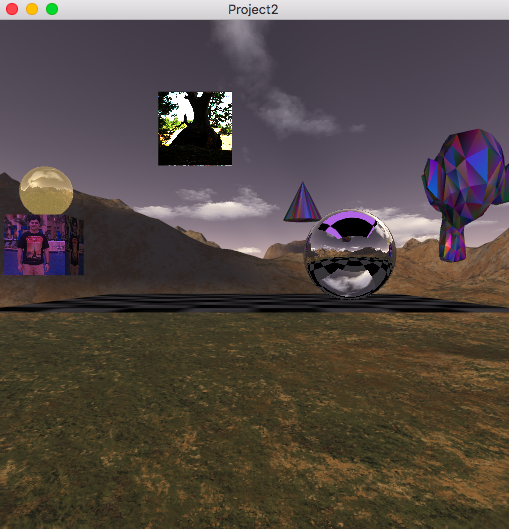
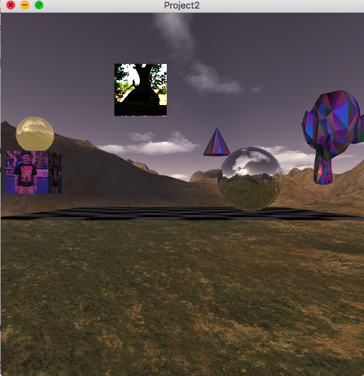

CS6610 Project 2- Shader based CubeMapping
Project 2 required us to render a simple scene composed of a checkerboard textured plane, a skybox, a textured cube, an alpha blended reflective sphere placed on top of the cube, a billboarded quad and a totally reflective sphere that captures and shows environment dynamically. Application allows users to control the texture filtering modes, alpha blend percentage and dynamic capture and display of environment using keyboard controls.
Scene with dynamic environment map rendered on the sphere
Scene with skybox rendered on the sphere
| Key | Operation |
|---|---|
| 'v' | Switch between per vertex to per fragment Phong shading |
| 'c' | Switch between single and multi color modes |
| 'm' | Switch between color vertex attrib and color generated in the shader |
| 'r' | Reset camera position |
| 's' | Start/Stop camera rotation |
| 'u' | Toggle 2D/ MipMap modes |
| 't' | Toggle Linear/Nearest filtering for 2D mode |
| 'y' | Toggle Linear/Nearest filtering for MipMap mode |
| 'f' | Start/stop dynamic environment capture |
| 'd' | Toggle between dynamic env map/skybox |
| 'a' | Increase/decrease alpha blending on reflective sphere |
| Button | Operation |
|---|---|
| 'Left' | Rotate the camera |
| 'Right' | Pan |
| 'Shift+Right' | Zoom in/out |
Video showing dynamic env mapping, mouse interactions, various color, blending and shading modes
Learnings
How to run the program?
Run build.sh to compile the code and run.sh to run the program.
{kind=link}
{kind=link}